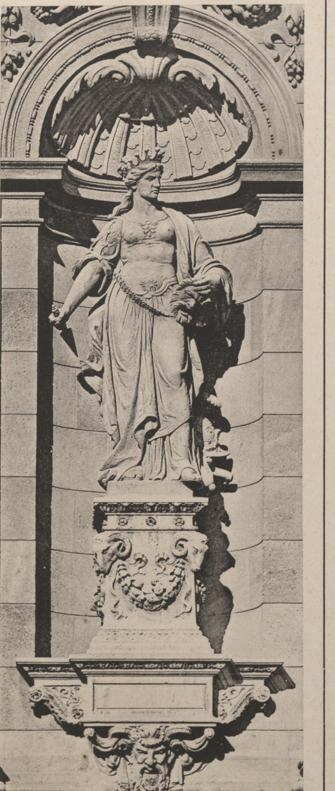

| type | statue |
|---|---|
| name | Melpomene (muse) |
| wall | W2_01 |
| position | [45.462, -10.956, 11.2] |
| size | [1.0, 0.7, 3.0] |
| confidence | C |
| notes | side-façade muse; side assignment D (Melpomene photographed with the Liszt niche, S12/Rozinay_99) |
| sculptor | Brestyánszky Albert (1883 caption; 'Béla' in S14/S15) |
| sources | S4: Ybl: Oldalhomlokzat c.1879, BTM KM ÉGY 3262 S14: Szobrok az Operaház homlokzatán (opera.hu) S15: Magyar Állami Operaház — hu.wikipedia |

# Melpomene — muse of tragedy (MU_MELPO) - Standing figure, crowned (mural/diadem), dagger in the lowered right hand, drapery with girdle; stands on an ornate pedestal with a theatre mask relief and garland; shell-headed niche (S23). - Sculptor: "Brestyanszky Albert, szobrász" on the 1883 plate (S23); S14/S15 give Brestyánszky Béla → conflict logged. - Position: niche on a side façade of the front pavilion (S14/S15: Thalia and Melpomene on the side façades); which side is not documented → modelled on the Dalszínház u. side (D). - Height: ≈ 3.0 m figure (C, from niche proportions).